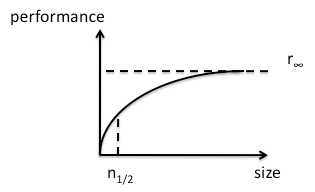

Suppose you have a processing pipeline with three stages:

Each stage takes one second to run; what's its overall performance? As Roger Hockney pointed out in the 1980s, that question isn't well formed. What we really need to ask is, how does its performance change as a function of the size of its input? It takes 3 seconds to process one piece of data, 4 to process two, 5 to process three, and so on. Inverting those numbers, its rate is 1/3 result per second for one piece of data, 2/4 = 1/2 result/sec for two, 3/5 for 3, etc. If we draw this curve, we get:

Any pipeline's curve can be characterized by two values: r∞, which is its performance on an infinitely large data set, and n1/2, which is how much data we have to provide to get half of that theoretical peak performance. Deep pipelines tend to have high r∞ (which is good), but also high n1/2 (which is bad); shallow pipelines are the reverse.
When I wrote Practical Parallel Programming twenty (!) years ago, I said that the more interesting measure for any machine was actually p1/2, which is how many programming hours it takes to reach half of a machine's theoretical peak performance. It was meant sarcastically: on most machines, the answer was and is "infinity", since most programmers think they're doing well if they can ever achieve 20-25% of the performance that the manufacturer quotes for a piece of hardware.
But the idea has stuck with me, and I think it underpins a lot of Software Carpentry. Our goal is to increase researchers' r∞, i.e., to help them produce new science faster. Our challenge is to minimize p1/2, so that researchers see benefits early. In fact, our real challenge is that learners' performance over time actually looks like this:

That dip is due to Glass's Law: every innovation initially slows you down. If the dip is too deep, or if it takes too long to recover from it, most people go back to doing things the way they're used to, because that's the safest bet [1]. But I've noticed something interesting in this round of Software Carpentry: if learners are working in a group with their peers, they seem to be willing to trust us more (or for longer) than otherwise. I don't think this is a case of not wanting to be the first to stop clapping; I think instead that with a group of half a dozen or more, the odds are good that someone is getting something out of the material at any particular moment, which gives everyone else a reason to carry on.
It's still early days, so I reserve the right to change what I think about this, but I'd welcome feedback...
[1] This is why we don't tackle object-oriented programming, distributed version control, or parallelism in our core curriculum: it takes too long for our learners to see the benefits. And in the case of parallelism, the payoff beyond "run all these jobs on whatever hardware is available" is usually negligible.
Originally posted 2012-03-04 by Greg Wilson in Education.
comments powered by Disqus